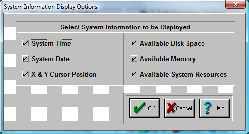

System Information Display Dialog Box
The System Information Dialog Box allows you to select which options are to be displayed in the Information Panel:

This is the System Information Panel.

You can click on-and-off each individual Check-Button. The options with a check-mark will be displayed each time you start My-T-Soft. To Sort the display, either add individually or click on the item in the System Information window to move the item to the front of the list (leftmost).
Press the OK Button.
If you do not want to save your changes, press the CANCEL button.